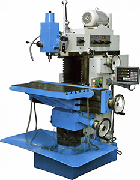
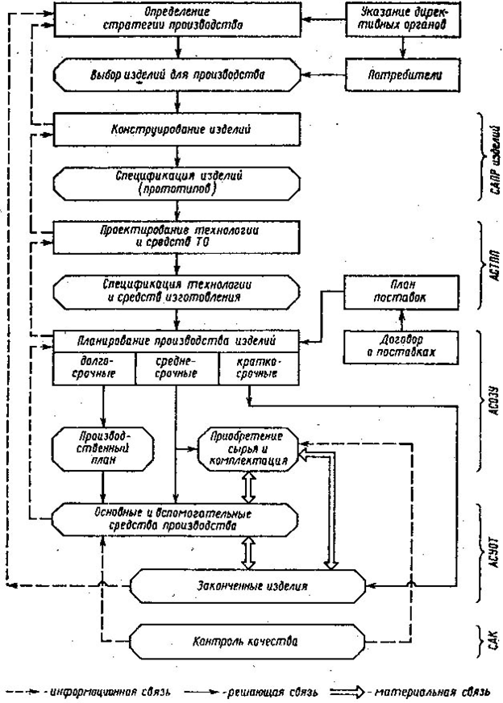

4. Станки
4.1 Классификация станков
Станок — многозначный термин, основное значение которого — машина, используемая (как правило, в промышленности) для обработки различных материалов, либо приспособление для выполнения чего-либо.
В машиностроениии применяются металлорежущие станки.
Металлорежущий станок — машина, предназначенная для размерной обработки металлических заготовок в соответствии с чертежом (эскизом) путем снятия материала механическим способом с помощью режущего инструмента.
Классификация металлорежущих станков.
Станки классифицируются по нескольким признакам.
По классу точности металлорежущие станки классифицируются на пять классов:
- (Н) нормальной точности;
- (П) повышенной точности;
- (В) высокой точности;
- (А) особо высокой точности;
- (С) особо точные станки (мастер-станки).
Классификация металлорежущих станков по массе:
- лёгкие (1 т);
- средние (1-10 т);
- тяжёлые (10 т);
- уникальные (100 т).
Классификация металлорежущих станков по степени автоматизации:
- ручные;
- полуавтоматы;
- автоматы;
- станки с ЧПУ;
- гибкие производственные системы.
Классификация металлорежущих станков по степени специализации:
- универсальные (для изготовления широкой номенклатуры деталей малыми партиями, используются в единичном и серийном производстве и в ремонтных работах);
- специализированные (для изготовления больших партий деталей одного типа, используются в среднем и крупносерийном производстве);
- специальные (для изготовления одной детали или детали одного типоразмера, используются в крупносерийном и массовом производстве).
Классификация металлорежущих станков по группам:
- токарные станки (Главной характерной чертой токарного станка считается вращательное действие обрабатываемой детали и поступательное действие подачи инструмента. С помощью токарных станков обрабатываются тела вращения. Токарные станки можно подразделить на следующие основные подгруппы: токарно-винторезный, лоботокарный, сферотокарный, токарно-револьверный, токарно-карусельный станок);
- сверлильные и расточные станки (Главная черта данного типа металлорежущего станков это вращательное действие инструмента. Обрабатываемая деталь и инструмент могут осуществлять поступательное действие подачи. Данный тип станков используется для создания и обработки отверстий. Станки можно подразделить на следующие основные подгруппы: вертикальный, радиальный, горизонтальный сверлильный станок.);
- шлифовальные, полировальные, доводочные, заточные (Определяющим признаком можно назвать используемый абразивный, в т.ч. алмазный инструмент).
- комбинированные (Данный тип металлорежущих станков является универсальным и применяется, когда не целесообразно использование узкоспециализированных устройств. Комбинированные станки используются для токарной, фрезерной, сверлильной обработки. Конструкции прессов-автоматов разнообразны. Бывают двойного и тройного действия, как правило, их делают двустоечными закрытыми. Номинальное усилие этих прессов достигает нескольких сот тонн. На прессах двойного и тройного действия выполняют операции глубокой вытяжки листового материала. Для операций объемной штамповки и правки применяют, как правило, винтовые фрикционные прессы, для операций формовки, чеканки - чеканочные и гидравлические прессы. Гидравлические, механические прессы применяемые для уплотнения обрабатываемого материала при помощи направленного усилия.);
- зубообрабатывающие, резьбообрабатывающие (Резьбообрабатывающие станки используются для образования резьб на обрабатываемых деталях. Зубообрабатывающие станки предназначены для образования прямо и косозубых зубчатых колес наружного зацепления стандартными фрезами, абразивными кругами на керамической связке.);
- фрезерные станки (На данной типе металлорежущего станка используется фреза для основного вращательного действия. Фрезерные станки применяются для внешних и внутренних фасонных поверхностей, фрезерования зубьев колес, расточки канавок и др. Фрезерные станки можно подразделить на следующие основные подгруппы: универсальный, горизонтально-фрезерный станок, вертикальный фрезерный станок.);

- строгальные, долбежные, протяжные (Строгальные и долбежные станки применяются для обработки резцами линейчатых фасонных поверхностей и плоскостей, пазов и канавок в условиях мелкосерийного и единичного производства. Металлообрабатывающим станкам этой группы свойственно возвратно-поступательное движение, которое сообщается режущему инструменту или заготовке. Строгальные станки бывают двух видов: поперечно-строгальные и продольно-строгальные.);
- разрезные (Предназначены для разрезания и распиловки сортового проката, прутков, уголков, швеллеров, балок. Режущим инструментом служат сегментная дисковая пила, абразивные диски или ножовочное полотно. Главное движение – вращение диска или возвратно-поступательное движение ножовочного полотна. Автоматические разрезные станки работают на разных скоростях, оборудуются устройствами периодической подачи заготовки и системами двухкоординатного управления рабочим столом. К данному типу металлорежущих станков можно отнести гильотинные ножницы, ленточнопильные станки, предназначенные для отрезки заготовок от целого куска металла.);
- разные (Муфтообрабатывающие станки для изготовление муфт из легированной стали. Подготовительные технологические операции изготовления муфт - разрезку труб на муфтовые заготовки и расточку внутренней поверхности заготовок - производят на специализированных муфторазрезных и муфторасточных станках-автоматах. Трубообрабатывающие станки для обработки металлических, главным образом стальных, труб путём снятия стружки или накатки резьбы. Пилонасекательные станки осуществляют насечку зуба пилы посредством пробоя через традиционную матрицу).
4.2 Станки с ЧПУ
В машиностроительной промышленности более половины всех станков работают в условиях массового, серийного и мелкосерийного производства, при этом удельный вес основного времени относительно не велик.
Применение систем числового программного управления в станках является наиболее эффективным средством повышения машинного времени и автоматизации мелкосерийного производства, что обеспечивает высокую технико-экономическую эффективность и позволяет организовать централизованную подготовку программ обработки даже вне предприятия, которые легко могут быть размножены.
При использовании станков с ЧПУ, наряду с повышением производительности, сроки подготовки производства сокращаются почти вдвое. Вместе с тем резко сокращаются слесарно-доводочные и другие работы, требующие больших трудозатрат и допускающие ошибки. Также можно получить значительную экономию средств на проектирование и изготовление технологической оснастки.
Станки с ЧПУ (Могут быть токарные, фрезерные, обрабатывающие центры. Данный тип станков оборудован числовым программным управлением (ЧПУ) для автоматизированного расчета и выполнения различных операций технологического процесса.).
Системы ЧПУ классифицируют по следующим признакам:
- по уровню технических возможностей;
- по технологическому назначению;
- по числу потоков информации (незамкнутые, замкнутые, самоприспосабливающиеся или адаптивные);
- по принципу задания программы (в декорированном виде, т.е. в абсолютных координатах или в приращениях от ЭВМ);
- по принципу привода (ступенчатый, регулируемый, следящий, шаговый);
- по числу одновременно управляемых координат;
- по способу подготовки и ввода управляющей программы.
По уровню технологических возможностей международной классификации системы ЧПУ делятся на следующие классы:
- NC – системы с покадровым чтением перфоленты на протяжении цикла обработки каждой заготовки;
- SNC – системы с однократным чтением всей перфоленты перед обработкой партии одинаковых заготовок;
- CNC – системы со встроенной малой ЭВМ (компьютером, микрокомпьютером);
- DNC – системы прямого числового управления группами станков от одной ЭВМ;
- HNC – оперативные системы с ручным набором программ на пульте управления.
Многоцелевые (сверлильно-фрезерно-расточные) станки для расширения их технологических возможностей оснащают контурно-позиционными системами ЧПУ.
Замкнутые системы ЧПУ характеризуются двумя потоками информации: от считывающего устройства и от датчика обратной связи. В этих системах рассогласование между заданными и действительными величинами перемещения исполнительных органов устраняется благодаря наличию обратной связи.
Разомкнутые системы ЧПУ характеризуются наличием одного потока информации, поступающего со считывающего устройства к исполнительному органу станка. В механизмах подач таких систем используют шаговые двигатели.

Крутящий момент, развиваемый шаговым двигателем, недостаточен для привода механизма подачи. Поэтому указанный двигатель применяют в качестве задающего устройства, сигналы которого усиливаются различными способами, например, с помощью гидроусилителя моментов (аксиально-поршневого гидродвигателя), вал которого связан с ходовым винтом привода подач. В разомкнутой системе нет датчика обратной связи, и поэтому отсутствует информация о действительном положении исполнительных органов станка.
Адаптивные системы ЧПУ характеризуются тремя потоками информации:
- от считывающего устройства;
- от датчика обратной связи по пути;
- от датчиков, установленных на станке и контролирующих процесс обработки по таким параметрам, как износ режущего инструмента, изменение сил резания и трения, колебание припуска и твердости материала обрабатываемой заготовки и т.д. Такие системы позволяют корректировать программу обработки с учетом реальных условий резания.
(схемы программ адаптивной разгрузки (а) и адаптивной загрузки (б) магазинов)
По способу подготовки и ввода управляющей программы различают так называемые оперативные системы ЧПУ (в этом случае управляющую программу готовят и редактируют непосредственно на станке, в процессе обработки первой детали из партии или имитации ее обработки) и системы, для которых управляющая программа готовится независимо от места обработки детали. Причем независимая подготовка управляющей программы может выполняться либо с помощью средств вычислительной техники, входящих в состав систем ЧПУ данного станка, либо вне ее (вручную или с помощью системы автоматизации программирования).
4.3 Преимущества станков с ЧПУ
Применение станков с ЧПУ в сравнении с обычным оборудованием создает ряд технико-экономических преимуществ.
Производительность этих станков выше производительности станков того же типа, но без программного управления, в три раза, потребность же в производственных площадях в три раза меньше. Значительно вырастает производительность труда у рабочих.
Большой эффект дают станки с ЧПУ при выполнении особо сложных операций, поэтому с их использованием высвобождаются высококвалифицированные рабочие, а также резко сокращаются затраты на технологическую подготовку производства, эксплуатацию инструмента, содержание контролеров отдела технического контроля.
Переналадка станков в этом случае заключается в замене программы, записанной на магнитной ленте или другом программном носителе, а в ряде случаев в замене инструментов. Широкий диапазон работ, выполняемых станками с ЧПУ, делает их особенно ценными в единичном и мелкосерийном производстве, а также на предприятиях, выпускающих сложную продукцию. Имеется опыт включения станков с программным управлением в поточные линии на предприятиях серийного и массового производства.
В современных условиях широко распространяется такой вид программного оборудования, как обрабатывающие центры. Они представляют собой многооперационные станки с автоматической сменой инструмента. Расположение станков в одном помещении создает условия для более качественного их обслуживания, многостаночного обслуживания, улучшения планирования и контроля за работой оборудования и т. п.
4.4 Назначение постпроцессоров
Постпроцессор – это модуль, преобразующий файл траектории движения инструмента и технологических команд, рассчитанный процессором CAM или CAD/CAM-системы, в файл управляющей программы в строгом соответствии с требованиями методики ручного программирования конкретного комплекса "станок – система с ЧПУ". Постпроцессор выполняет немалое количество функций, например:
- кодирует линейные перемещения сообразно цене импульса;
- выполняет линейную или круговую интерполяцию перемещений по дуге окружности, а также кодирует их в импульсах;
- рассчитывает динамику перемещений, отслеживая и, если нужно, уменьшая слишком большую подачу на малом перемещении (станок не успеет разогнаться);
- автоматически выдает в кадр вектора или функции коррекции на радиус инструмента;
- строит текущий кадр по шаблону, автоматически нумеруя кадры под адресом "N";
- превращает подачи, назначенные технологом, в конкретный набор символов с адресом "F" и выдает в нужное место кадра;
- оформляет как начало, так и конец управляющей программы, а также структуру кадра.
Постпроцессоры последовательно читают записи из файла траектории движения инструмента и техкоманд (CLDATA-файл) и выполняют преобразование этих записей в один или несколько кадров управляющей программы по некоторым правилам, отличным для разных станков и систем ЧПУ.
Постпроцессор соотносит каждой записи CLDATA-файла алгоритм ее превращения в кадр управляющей программы, и сохранить эти правила отдельно для каждого станка-системы ЧПУ в виде файла. Именно это дало возможность создать один универсальный постпроцессор как машину, транслирующую каждую запись CLDATA-файла в кадры управляющей программы по правилам, которые можно подгружать из внешних файлов.
Такой метод получил название "универсальный постпроцессор".
Сложной является разработка программного обеспечения для оборудования с узкой сферой применения. К таким относятся всевозможные шлифовальные станки для изготовления осевого режущего инструмента. Большую проблему создает существенная зависимость полученной геометрии на изделии от геометрических параметром инструмента. Целесообразно создавать специальные программные модули, которые могут взять на себя всю математическую нагрузку по расчету траекторий движений, учета ограничений и создания управляющей программы.
Современные постпроцессоры для подобного оборудования требуют только введения данных из чертежа или иной документации на изделие, а затем путем внутренних расчетов выдают готовую программу обработки, с учетом всех технологических особенностей. Подобные программные модули являются узкоспециализированными и разрабатываются по специальному заказу предприятия. Последней тенденцией стало встраивание таких модулей в систему ЧПУ, что позволило квалифицированному рабочему самостоятельно программировать сложные виды обработки.
4.5 Виды обработки изделий на станках с ЧПУ
- точение наружное;
- точение внутреннее;
- точение канавок;
- сверление;
- фрезерование;
Полную верси. можно посмотреть с разделе «Видео»
4.6 Обрабатывающие центры
Современные обрабатывающие центры были разработаны на базе фрезерных станков с программным управлением. Основное их отличие заключается в полностью изолированной рабочей зоне этого станка, наличии узла для быстрой смены режущего инструмента, функции автоматического удаления стружки и подачи охлаждающей жидкости непосредственно через шпиндель станка. В зависимости от положения шпинделя относительно устанавливаемой заготовки обрабатывающие центры могут быть либо горизонтальными, либо вертикальными.
Наряду с фрезерными обрабатывающими центрами были разработаны и токарные – их возможности практически также безграничны. Отличаются они от фрезерных станков этого типа исключительно видом возможных обработок. Если во фрезерных центрах в качестве обрабатывающего инструмента используется вращающийся инструмент, то в токарных – стационарный, обработка здесь осуществляется за счёт вращения заготовки.
Наличие двух принципиально различных обрабатывающих центров даёт возможность организовать на предприятии полный цикл производства того или иного изделия в полном объёме без привлечения другого оборудования.
Под многооперационным станком типа обрабатывающий центр понимают станок с ЧПУ, обеспечивающий выполнение большой номенклатуры технологических операций без перебазирования детали и с автоматической сменой инструмента.
Основными узлами, отличающими обрабатывающий центр от станков с ЧПУ, является многопозиционный сменщик инструмента, способный управляться с большим количеством инструмента (в обойму сменщика может вмещаться от 10 до 60 инструментов) и особое программное управление нового поколения. Благодаря уникальной системе позиционирования инструмента относительно заготовки достигается не только высокая точность обработки, но и значительно сокращается время на выполнение всех операций.
С применением обрабатывающих центров (многооперационных и многоцелевых станков), обеспечивающих выполнение комплекса операций для деталей определенных групп (при минимальном количестве переустановок и передач деталей на другие станки и применении разнообразного инструмента), осуществляется автоматизация мелкосерийного производства путем концентрации обработки деталей на одном рабочем месте. Этим в значительной мере исключаются недостатки мелкосерийного производства. При концентрации обработки деталей на одном рабочем месте обеспечивается сокращение времени на установку детали, затрат на оснастку, а также повышение точности обработки.
С созданием обрабатывающих центров в корне меняется организация мелкосерийного производства, поскольку можно изготовлять такое количество деталей, которое необходимо для текущей потребности, и отпадает требование изготовления партии экономичного размера. В обрабатывающих центрах автоматизированы циклы, смена инструмента (зачастую и смена деталей), перемещения совершаются по заданной траектории при помощи числового программного управления.
С применением обрабатывающих центров устраняется указанный недостаток вертикальных и горизонтальных фрезерно-расточных станков, которые по заданной программе, с минимальным числом установок и перезакреплений детали осуществляют различные технологические операции, заменяя несколько станков традиционных компоновок. Следовательно, обрабатываемые центры, являясь принципиально новыми станками, обеспечивают автоматизацию обработки в условиях мелкосерийного и единичного производства.
4.7 Назначение обрабатывающих центров
Обрабатывающий центр разработан для быстрой и высокоточной обработки деталей с помощью различных инструментов и операций. Эти станки могут работать как в автоматическом режиме, так и в полуавтоматическом – в этих режимах обрабатывающие центры выполняют операции такие же, как сверлильные и фрезерные станки. Они могут комплексно обрабатывать деталь (сверлить, зенкеровать, фрезеровать, развертывать отверстия и нарезать наружную и внутреннюю резьбу) без её перебазирования с автоматической сменой режущих инструментов. При желании на обрабатывающих центрах можно наладить даже процесс шлифования.
Примерами такого оборудования являются центры WFL – станкостроительного завода г. Линца (Австрия), NAKAMURA-TOME, MAZAK (Япония) и другие.
Схема работы обрабатывающего центра с ЧПУ может обеспечиваться различными конструкциями. Например, для определения точности перемещений и обработки поверхностей могут быть встроены линейки: оптическая или магнитная, цена делений такой линейки 0,001мм.
В некоторых конструкциях эти линейки могут отсутствовать, тогда точность перемещений и регулировка рабочего органа (РО) осуществляется за счет возможностей электропривода, точность угловых перемещений которого составляет 0,0010, на рисунках №№1 и 2 изображены принципиальные схемы работы станка с ЧПУ с линейкой и без линейки.
В случае, если линейка отсутствует, перевод угловых размеров в линейные производится программой управления станка.

Выполнение команд обрабатывающего центра производится через электрические импульсы от ЧПУ по схеме:
Электродвигатели применяются специальные. На каждую приводную ось станка и на каждый шпиндель установлен свой двигатель.
Станок имеет положение 0 (ноль) и относительно этой отметки сам выбирает нужный параметр по линейке или через угловые повороты вала двигателя, обеспечивая точность размера.
Существуют классические схемы базирования обрабатывающего центров зависимости от вида обработки.
Обработка деталей производится за один установ с двух сторон. Передача детали для обработки и ее закрепление производится автоматически самим центром по управляющей программе.
Схема расположения осей привода для обработки и подвода инструмента станка MILLTURN:
Данный станок имеет 8 осей, но в зависимости от конструктивных возможностей различные станки могут иметь разное количество осей (от 1 до 11).
Обеспечение точности обработки обеспечивается:
- Станком при условии использования соответствующего инструмента для данного обрабатываемого материала и режимов резания;
- Станком и технологическим базированием;
- Опытом технолога, выбирающего последовательность обработки, базы, инструмент и т.д;
- Технологической оснасткой;
- Точностью рабочих поверхностей.
Обеспечение жизнеспособности рабочих поверхностей станка производится автоматизированной системой смазки станка.
4.8 Достоинства обрабатывающих центров
- Полный цикл обработки детали (несколько операций за один установ);
- Имеется магазин инструментов и станок сам берет нужный инструмент в соответствии с управляющей программой (УП);

- Согласованная параллельная работа исполнительных органов станка;
- Использование приводного инструмента (блоки сверл, фрез и др.);
- Возможность обработки эксцентриков, коленчатых валов за счет наличия большого количества осей (1-11);
- Обработка сложных контуров с 3D модели;
- Быстрое и качественное написание программ CAD / CAM систем с 3-х мерного моделирования;
- Использование программы VERIKUT для имитации обработки с целью исключения столкновений инструмента между собой, с деталью и станком, полное тестирование программы;
- Возможность использования постпроцессора, т.е. разработка программы перевода команд CAD/CAM/САЕ систем в машинный язык станка, на котором будет обрабатываться данная деталь.
Вывод: CAD/CAM/САЕ – это САПР высшего уровня.
В последнее время многие производители промышленных станков производят универсальные обрабатывающие центры – они сочетают в себе достоинство токарных и фрезерных станков и способны самостоятельно осуществлять полную обработку изделия от начала и до конца. Преимущества таких станков неоспоримы – возможность производства изделия за одну или две установки исключает из технологического процесса вспомогательное время обработки и значительно увеличивает темпы производства.
4.9 Гибкие производственные системы
Гибкие производственные системы (ГПС), которые в настоящее время широко внедряются в различные производства, кардинально повышают производительность труда и объемы производства продукции, расширяют ее номенклатуру и сокращают сроки обновления моделей машин и механизмов. Высокая степень автоматизации в ГПС сокращает количество рабочих, занятых в производстве, и улучшает условия труда. ГПС включает основное и вспомогательное технологическое оборудование, автоматизированные транспортно-накопительные системы, робототехнологические комплексы (РТК), средства вычислительной техники.
Гибкие производственные системы создаются в основном в машиностроении, где процесс производства связан с механическими перемещениями предметов и орудий труда, с механическими воздействиями на предметы труда.

Гибкая производственная система, охватывающая завод, состоит из ГПС цехов (заготовительных, обрабатывающих, отделочных, строительных и др.), участков и технологических линий, объединяемых в законченную производственную единицу за счет единой системы управления производством, организующей все множество частных материальных потоков в единый материальный поток, и информационной взаимосвязи между системами управления автоматических линий, участков и цехов.
Гибкая производственная система (ГПС) представляет собой совокупность в разных сочетаниях оборудования с ЧПУ, роботизированных технологических комплексов, гибких производственных модулей, отдельных единиц технологического оборудования и систем обеспечения их функционирования в автоматическом режиме в течение заданного интервала времени. Любая ГПС обладает свойством автоматизированной переналадки при производстве изделий произвольной номенклатуры в установленных пределах значений их характеристик.
Гибкая производственная система в целом имеет многоуровневую иерархическую структуру.
Гибкие производственные системы на основе совместного использования станков с программным управлением и промышленных роботов для комплексной обработки широкой номенклатуры деталей, а также выполнения ряда сборочных операций.
Гибкие производственные системы (ГПС) реализуют процессы, в которых объединены все описанные выше технологии. Их достоинство - автоматизация без потери гибкости. Они позволяют сократить затраты на переналадку оборудования, что обеспечивает экономичность производства небольших партий изделий.
Гибкие производственные системы (ГПС) отличаются пространственной структурой и методами организации (для гибкого модуля - точечная организация, для гибкой линии - принцип жесткой и гибкой передачи предмета труда), временной структурой (той или иной степенью свободы формирования номенклатуры запускаемых в производство деталей), а также степенью интеграции основных, вспомогательных и обслуживающих процессов в единый производственный процесс.